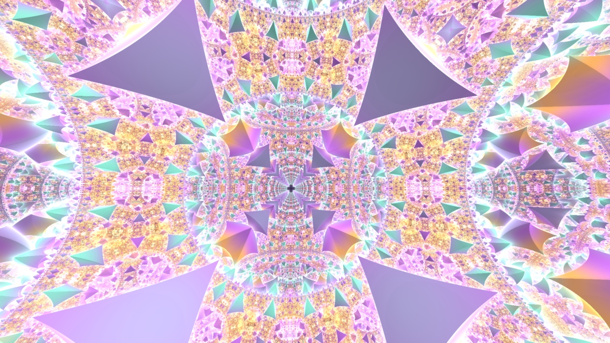
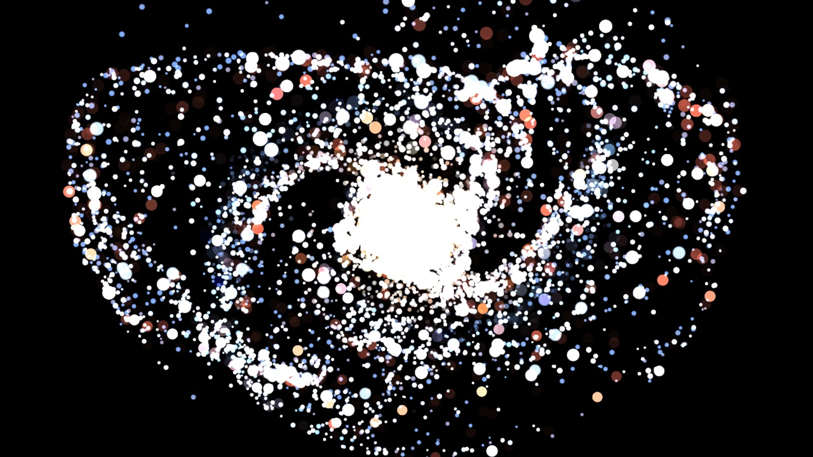
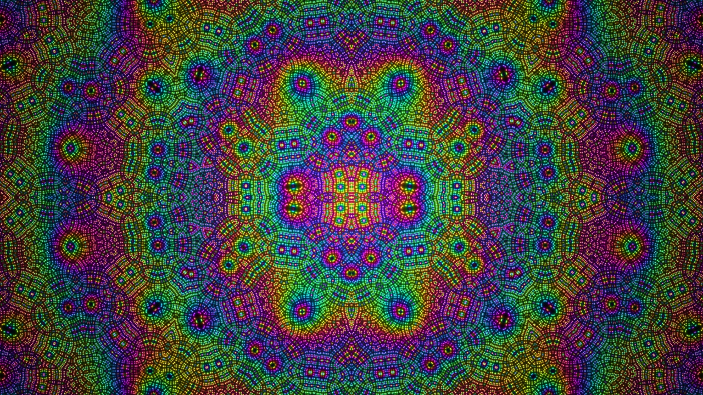
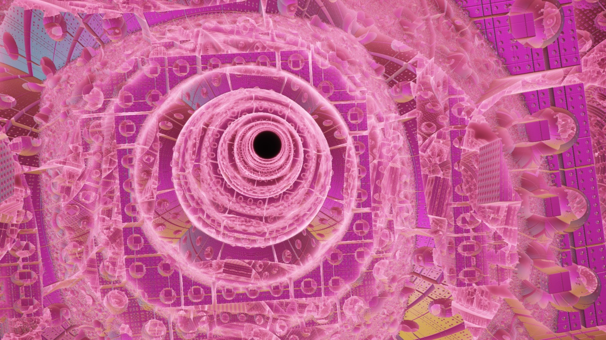

A shader engine, not a shader player.
Three authoring formats, parameters that become instruments, a GPU compute layer for real simulation, and hot reload on save. Every image on this page is Fluence's own output.

Write it your way. Drop it in a folder.
Fluence speaks the formats shader authors already use. No conversion, no SDK, no build step.
ISF
The interchange standard for VJ shaders. Generators, effects, and transitions with declared inputs, persistent buffers, and multi-pass rendering. Your existing ISF library works as-is.
GLSL .fs
Plain fragment shaders with a JSON metadata block. Add -- VERTEX -- and -- GEOMETRY -- stages for procedural 3D, or -- COMPUTE -- passes for simulation.
Shadertoy .json
Full multi-pass Shadertoy support: buffer passes, cubemap passes, and the Image pass, with channel routing intact. Port a Shadertoy without rewriting it.
Drop files into Documents/Fluence/Shaders and they appear in the browser, organized by the
category each shader declares. Edit one while it's playing and it hot-reloads on save.
A custom shader with a built-in's name overrides it.
Declared inputs become instruments.
Every input a shader declares renders as a control: sliders, colors, toggles, menus, points — grouped the way the author grouped them. And every one of those controls is a target: bind it to a MIDI knob, drive it from a frequency band, automate it on the timeline, or hand it to a script or AI agent over the control API.
Declare an audioFFT input and the shader receives the live spectrum directly —
audio-reactivity inside the shader itself, on top of the FFT drives outside it.
/*{
"DESCRIPTION": "Fisheye bulge or pinch
inside a circular region.",
"CATEGORIES": ["Distortion"],
"INPUTS": [
{ "NAME": "inputImage", "TYPE": "image" },
{ "NAME": "amount",
"LABEL": "Amount",
"TYPE": "float",
"MIN": -1.0,
"MAX": 1.0,
"DEFAULT": 0.35 }
]
}*/Real simulation, inside a shader file.
Declare storage buffers, write compute passes over them, and read the results in your render stages — all in one file. Particles, fluids, flocking, and physics are shaders in Fluence, not engine features.
Half a million stars, one file.
This is the bundled Galaxy shader: a 500,000-particle pool in author-declared storage buffers, stepped by four compute passes, drawn with GPU-written indirect instancing. Emission, orbital dynamics, spiral-arm forces, and audio response — every knob exposed as a parameter.
Buffers can be persistent across frames or double-buffered for ping-pong simulation. Passes run with configurable substeps. Twenty-two of the bundled shaders are built on this surface.

The authoring surface.
Storage buffers are declared in metadata with a stride and count. Compute passes are named blocks in the same file, dispatched in order — per-buffer thread counts or a single workgroup for frame-level logic. Indirect draw arguments can be written by the GPU itself.
"BUFFERS": [
{ "NAME": "Pool", "STRIDE": 48,
"COUNT": 500000, "PERSISTENT": true },
{ "NAME": "DrawArgs", "KIND": "drawIndirect" }
],
"COMPUTE": [
{ "PASS": "init", "THREADS": "Pool" },
{ "PASS": "emit", "THREADS": "Pool" },
{ "PASS": "sim", "THREADS": "Pool" }
]
-- COMPUTE sim --
void main() {
Particle p = Pool[gl_GlobalInvocationID.x];
/* orbital dynamics, arm forces, turbulence */
}Buffers, feedback, cubemaps.
Multi-pass shaders render intermediate buffers that later passes read — the structure behind feedback trails, reaction-diffusion, and screen-space effects. Shadertoy's buffer and cubemap passes are supported with their channel routing intact, and ISF persistent buffers carry state between frames.

Geometry is a stage, not a limit.
Add -- VERTEX -- and -- GEOMETRY -- stages to a shader and it draws real
geometry: procedural meshes, instanced fields, GPU-simulated particles drawn as quads. Or load OBJ
and GLTF models with full PBR materials and dynamic lighting — either way, it's just another
clip on the deck.

Shape Shifter writes shaders for you.
The Shape Shifter 3D editor is live SDF modeling: primitives, boolean operations, modifiers, deformations. As you build, Fluence generates raymarching GLSL containing only the shapes and operations your scene uses — hand-written-shader performance without writing a line.

Transitions, effects, and grades are shaders too.
Custom transitions
Forty-eight bundled transitions, every one a shader with tunable parameters. Drop your own into Documents/Fluence/Transitions — the standard ISF transition contract works unchanged, and it hot-reloads on save.
Effect shaders
Effects are the same pipeline pointed at an input image, stackable at clip, layer, group, and composition scope. A generator effect dropped on an empty slot consumes the layers below it as input.
3D LUTs
Curated Cinematic and Creative .cube collections with live preview tiles. Drag a look onto any clip, layer, group, or chain; blend it with an intensity slider. Your own LUTs load from Documents/Fluence/LUTs.
Compiled like an engine.
Every shader is compiled through glslang to SPIR-V and runs on Fluence's wgpu renderer — Metal on macOS, Vulkan on Windows — with the parameters you move re-uniformed per frame, not recompiled. That's what makes 215 bundled shaders, your folder of customs, and a half-million-particle simulation feel like clips instead of projects.
Bring your shader folder.
Fluence is the fastest way to get a shader from your editor to a stage.